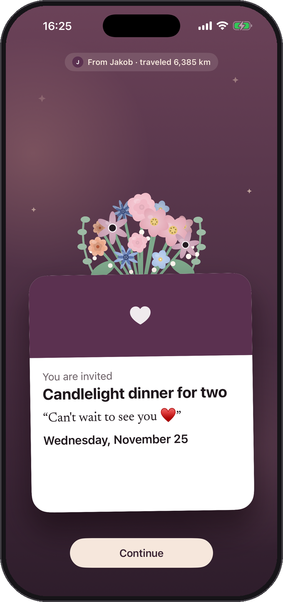
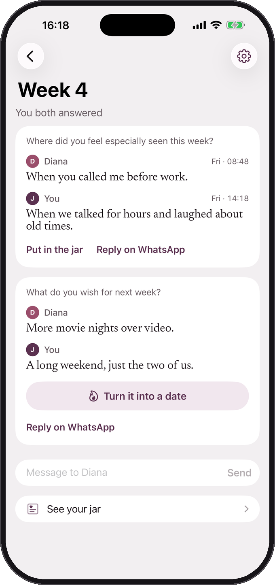
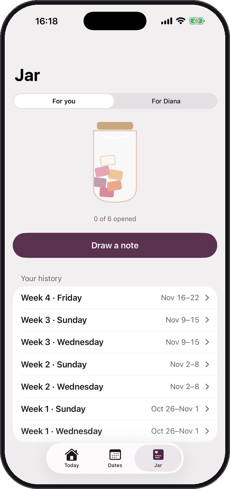

Date invitations
Pick an idea, write a card and put together a bouquet. Your partner unwraps the invitation, then accepts it or suggests another time. Accepted dates go into the calendar, with the time for both time zones.
TwoOfUs puts it on your Home Screen: what time it is where your partner is, how far apart you are, and how many days are left until you see each other again.
Free for iPhone with iOS 26. In English and German.
New in version 1.8: more than 70 questions for the check-in, many of them for long-distance couples, and reminders while your check-in is still open.
Besides the widgets, there are three things you share. You both see the same thing, whatever time zone you’re in.

Pick an idea, write a card and put together a bouquet. Your partner unwraps the invitation, then accepts it or suggests another time. Accepted dates go into the calendar, with the time for both time zones.

You choose the days. Each of you answers two or three short questions on your own, and you only see each other’s answers once you’re both done. There are more than 70 questions to choose from, many of them for long-distance couples.

Every compliment from your check-ins becomes a slip in the jar. On a bad day, draw one and read what your partner likes about you.
You add them like any other iPhone widget. When one of you changes something, the other sees it shortly after.
TwoOfUs has no server of its own. What you share syncs between your two iPhones through Apple’s iCloud, and we have no access to it.
You sign in with Apple. The app doesn’t ask for your email address or a password.
There are no ad networks and no analytics tools in the app.
Under Settings → Account you delete your account and your data. The details are in the privacy policy.
You both need an iPhone with iOS 26. Setting up takes a few minutes.
TwoOfUs is free on the App Store.
With your Apple ID, no new password.
One of you creates an invitation, the other enters the code or opens the link.
Touch and hold the Home Screen and choose TwoOfUs.
Questions about widgets, connecting or privacy are answered in Support.